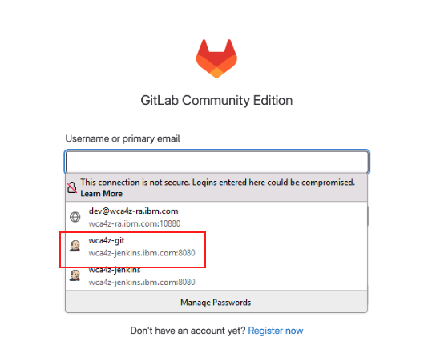
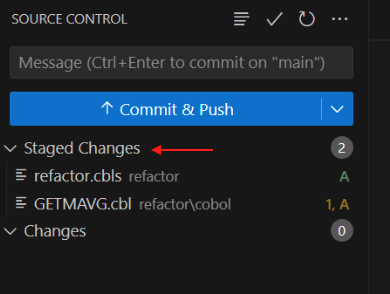
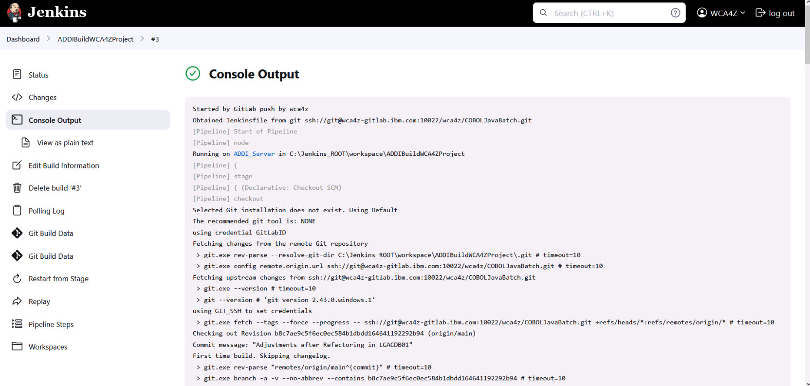
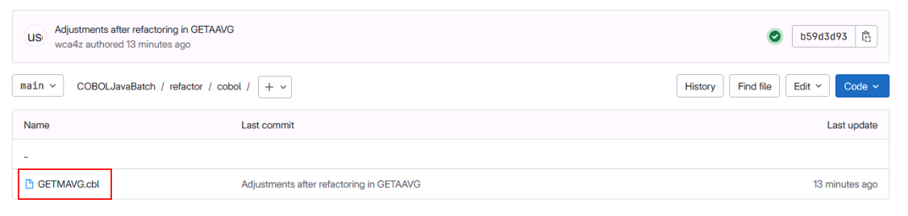
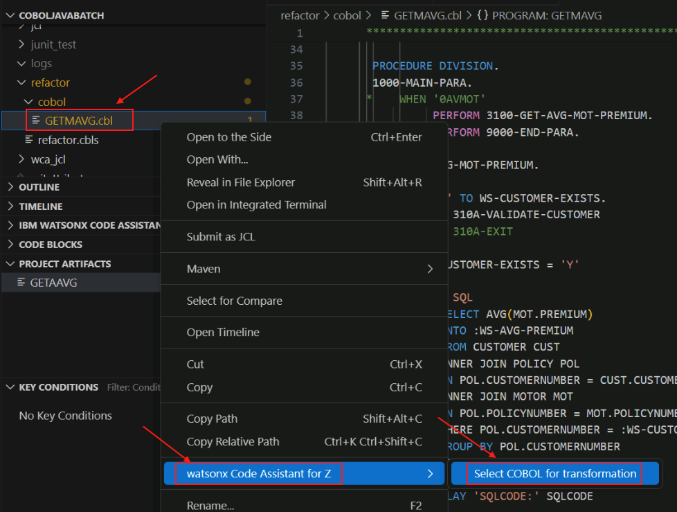
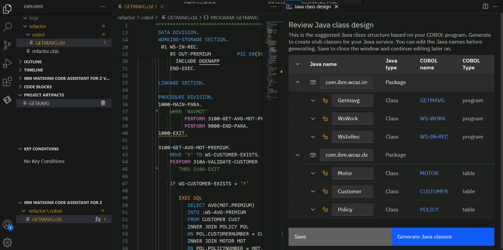
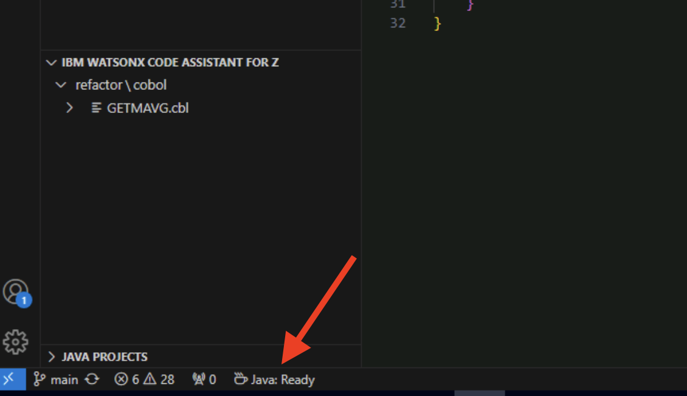
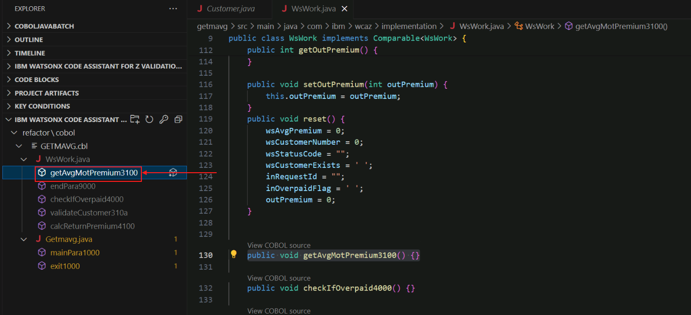
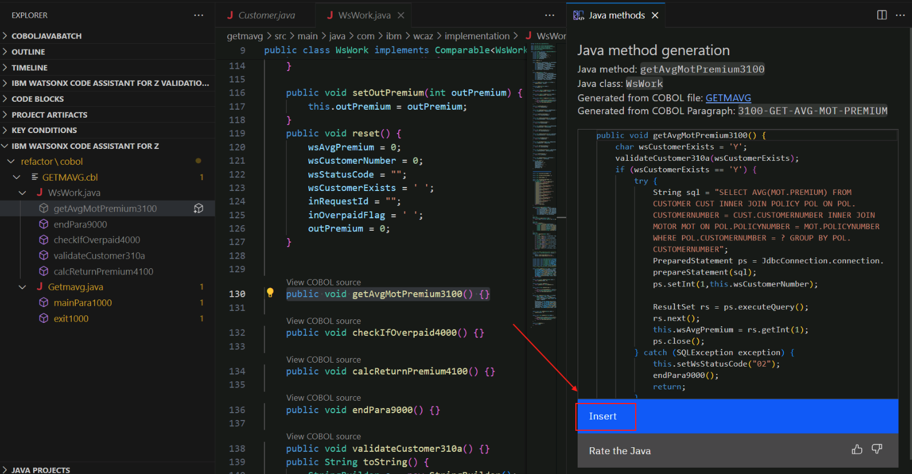

Transform Phase¶
Overview of the Transform Phase¶
In the transform phase, refactored COBOL code is transformed to Java with the aid of generative AI. This transformation is a three-step process.
First, Java classes are created to implement a data model based on COBOL group items and SQL tables identified in the source code, and Java classes are created to implement the business logic. The methods within the business logic implementation classes are provided as stubs- that is, they are empty. This step is performed by traditional programming logic- in other words, the generative AI model is not used in this step.
In the second step, the empty business logic methods are created by the generative AI model. The source COBOL paragraph is sent to the watsonx Code Assistant for Z service running in IBM Cloud, and this paragraph is combined with program metadata information stored in an IBM Db2 service on IBM Cloud, to form the prompt to the generative AI model. The AI model returns Java code based on this prompt.
In the third step, the Java developer, with help from the COBOL developer if necessary, makes any necessary changes to the returned Java code to ensure that it is compilable and that it performs the functions it is expected to perform.
Transform the Refactored Service Code from COBOL to JAVA¶
-
Save the changes in GETMAVG.cbl by choosing File->Save from the VS Code menu.
-
Open the Firefox browser in your zVA instance.

-
Click the GitLab bookmark from the bookmarks toolbar.

-
The GitLab page will prompt you for login credentials. Click the Username or primary email field, select the wca4z-git saved credentials, and click Sign in.

After successfully logging in to GitLab, the GitLab Projects page will open.
-
Open the Project named wca4z/COBOLJavaBatch.

-
Feel free to peruse the files currently included in the project. The most noteworthy thing is that there are no COBOL program source files- files ending in .cbl- at the moment. This situation will change- you will commit the refactored COBOL code to this project soon.

-
Open another new tab in the web browser and click the Jenkins bookmark from the bookmarks bar.

-
The Jenkins login page will appear. Select the saved credentials for wca4z-jenkins and click Sign in.

-
After successfully logging in, the Jenkins Dashboard will appear. The project you'll be working with is named ADDIBuildWCA4ZProject.

-
Click ADDIBuildWCA4ZProject and see that no previous builds have been run.

-
Navigate back to VS Code. In the far left side of the screen, click the Source Control icon.

-
Click the + sign in the Changes section of the VS Code Source Control page to stage the refactored COBOL program (GETMAVG.cbl) and the JSON file containing the information about the service (refactor.cbls).
You may need to hover over the Changes line in order for the + sign to appear.

If done correctly, the changes will move to the Staged Changes section.

-
Add a commit message for the changes. E.g.,
Adjustments after Refactoring in GETAAVG. -
Click the Commit & Push button.

-
A new pop-up will appear prompting you for GitLab credentials. Enter the following and click Continue to log in.
- Username:
wca4z-git - Password:
P@assw0rd

After doing so, your changes should be committed and pushed to the GitLab repository.
- Username:
-
Navigate back to the Jenkins page in your web browser.
-
You should see a new job that was automatically triggered with your pushed changes. Wait until all stages of the job are completed.

-
Click the Build number from the list on the left, and then click Console Output.
This could be #2 or #3, for example.


The log for the job will appear.
-
Look through the job log to see the actions that were performed.

This Jenkins build was triggered by the commit you made to GitLab. The purpose of the build is to create metadata information that is used by the watsonx Code Assistant for Z service on IBM Cloud. This metadata information will be combined with a COBOL paragraph's source code to form a prompt to the large language model (LLM). The LLM returns Java code based on the prompt.
Scroll through the Console Output, and look for:
DELETE FROM EZSCH.WCAZCATALOGEZSCH.WCAZCATALOG is the Db2 table that will contain the metadata information about the refactored COBOL code. This table is created the first time that the process that creates the metadata information is run. The message SQL0204N "EZSCH.WCAZCATALOG" is an undefined name indicates that this table does not exist. That message is okay and is expected since this is the first time this Jenkins build has run- the Jenkins build includes a step to delete all the rows because at the end of the build new rows will be inserted based on the refactored COBOL code that you have committed. If you were to do another commit (which you won't have to do if the lab works perfectly but you might have to do for debugging reasons) then you would see different messages after the DELETE FROM because now your table does exist.
Look for messages like this:
Found an updated file: "GETMAVG.cbl" Resolved path to file: "C:\data\GIT_REPOS\refactor\cobol\GETMAVG.cbl" Adding program "GETMAVG" to import queue Populating additional metadata for WCA4Z from ADDI and DDL Populating metadata for program GETMAVG Generating PrimaryKeys.csv and ForeignKeys.csv Importing data into the database Done.The program that you committed, GETMAVG.cbl, was detected, and metadata about the program, including information about the primary keys and foreign keys of the Db2 tables used by the program, is written to the database that watsonx Code Assistant for Z uses to help construct the prompt to the LLM.
Note: The Jenkins pipeline that is running here is not provided with watsonx Code Assistant for Z. The pipeline takes advantages of components provided by watsonx Code Assistant for Z, but the pipeline itself is tailored to this lab environment. There are other ways to create and store this metadata information, and in fact the way that it is created and stored has changed from version 1.1 to version 2.0 of watsonx Code Assistant for Z. This lab doesn't go into detail on this topic.
-
Navigate back to the GitLab tab in the browser and refresh it.

You should see a few changes.
- a new commit with a green check mark, and
- a new refactor folder that was not present before
-
Open the refactor folder in the GitLab browser page, then open the cobol sub-folder.
The GETMAVG code will now be present.

Let's review Here's what transpired in the last several steps (from step 14 up to this point):
- When you did the Commit and Push in step 14, it pushed the changes you made with Refactoring Assistant up to the source code repository on your Gitlab server
- This triggered the Jenkins pipeline which executed a series of steps. The purpose of these steps was to inspect the code changes, incorporate them into an ADDI project associated with your source code repository, create metadata information that will be used for transforming the COBOL code to Java, and writing this metadata information to the IBM Cloud Db2 service that the watsonx Code Assistant for Z service uses.
-
Navigate back to VS Code.
-
Click the Explorer icon in the upper left, right-click the GETMAVG.cbl file, hover over watsonx Code Assistant for Z, and choose Select COBOL for transformation.

Note: the same task can be performed by selecting the Import COBOL button in the bottom-left corner of VS Code under the IBM WATSONX CODE ASSISTANT FOR Z section.
Either way, the GETMAVG.cbl file should now be present in the IBM WATSONX CODE ASSISTANT FOR Z section in the bottom left of VS Code.
-
In the IBM WATSONX CODE ASSISTANT FOR Z section in the bottom left, click the icon next to GETMAVG.cbl to Generate Java classes.

A new input bar will appear in the top middle of VS Code, prompting you for a Java directory,
-
Select Input absolute path, click in the blank space on the right side of the input field to remove the highlight from the default path, and then add the following to the end of the default path:
\getmavg\src\main\java.The absolute path should be the following:
c:\Users\Administrator\Desktop\WCA4Z Lab Data\COBOLJavaBatch\getmavg\src\main\java
-
Press Enter
A new tab for Java Class design should open.

The metadata information that was just created from the Jenkins pipeline was used to construct the information that is presented to you in this tab.
Here is a recap of the classes that are being created:
- A Java class in the datamodel package was created for each of the three Db2 tables referenced in the code: Customer, Motor, and Policy. The variables in each class correspond to the columns in the Db2 table.
- A Java class was created in the implementation package corresponding to the name of our refactored COBOL program- Getmavg.
- For each 01-level group item in the refactored COBOL program, a class is created in the implementation package- in our case, WsWork and WsInRec, which correspond to the COBOL group items WS-WORK and WS-IN-REC, respectively.
-
Expand the different artifacts using the down arrows. Keep all of the default values.
Notice that there are methods listed under the Getmavg package and the WsWork package. These are java methods that will correspond to COBOL paragraphs from the refactored COBOL program. Watsonx Code Assistant for Z placed some of the methods in the Getmavg class and some in the WsWork class. Those classes that manipulate a group item are candidates to be placed in the class for that particular group item (e.g., WsWork) instead of in the class named for the refactored COBOL program (e.g., Getmavg).

-
At the bottom right of Java Class design tab, click Generate Java classes.

-
In the left side menu of VS Code, navigate to the getmavg\src\main\java\com\ibm\wcaz folder to see the list of generated Java classes.
-
Copy the JdbcConnection.java file into the implementation folder, \getmavg\src\main\java\com\ibm\wcaz\implementation. The easiest way to do this on the zVA is probably to right-click and copy against JdbcConnection.java and then on the implementation folder name do right-click and paste. Trying to drag and drop defaults to move instead of copy which is why we advise to use right-click context menus instead of drag and drop. We're asking you to copy for debugging purposes only- in case we instruct you to remove the implementation folder during problem determination steps, it is good to have the original copy.

JDBC stands for Java DataBase Connectivity. The details for configuring a connection from Java programs to data bases may be standardized for a company, and this program exemplifies using a particular class for the connectivity. So the Java developer will use this class and you will see in a later step how they must make minor changes to the code returned by the Large Language Model (LLM) in order to work with this class.
-
When you copied the file in the previous step, VS Code extensions for Java activated since this was the first time in the lab instructions you worked directly with a java file. Note: It is possible that you looked at some java files on your own out of curiousity a little while ago and the actions taken by VS Code as described in this step may already have occurred.
A new section named JAVA PROJECTS will appear at the bottom-left of VS Code and the Java projects will be generated.

You may need to expand the JAVA PROJECTS section to see the projects. You aren't really going to take specific actions within the JAVA PROJECTS section, so you can collapse this section when you're done perusing it. What is important here is to wait for the message Java: Ready to appear in the lower left of VS Code. It may take a couple of minutes for things to settle down to the point where you see Java: Ready. Important: Wait for the message Java: Ready to appear.

-
The Java classes and method names can be found in the refactor\cobol folder in the IBM WATSONX CODE ASSISTANT FOR Z section.

You may need to expand the IBM WATSONX CODE ASSISTANT FOR Z section to see the classes and methods.
-
In the refactor\cobol folder, click on the method named getAvgMotPremium3100.

The source code for WsWork.java is displayed and the getAvgMotPremium3100 method is highlighted. Notice that the body of this method is empty- there is nothing betwen the curly brackets {}. This empty method was set up during the Generate Java classes action you took moments ago with the expectation that the contents of the method will be generated by the LLM. This is what happens during the Generate Java method action that you will be performing on each empty method.
-
In the refactor\cobol folder, click the icon next to the getAvgMotPremium3100 filename to generate the Java method.

The large language model (LLM) will begin to generate Java code for the getAvgMotPremium Java method which matches the functionality of the 3100-GET-AVG-MOT-PREMIUM COBOL paragraph.
-
After the Java method gets generated in the right-side panel, click the Insert button.

The generated Java code getAvgMotPremium3100 will be inserted into the body of the method.

In the left side menu, you can see that getAvgMotPremium3100 now has a check mark next to its icon. This indicates that the method has been generated. Now that you've inserted the Java code into the method, you can close the Java method generation tab to reduce clutter in the VS Code window.

-
Repeat this process (steps 33-35) for the remaining methods, one method at a time, until they are all checked off.

Fix problems identified in the generated Java code¶
It is anticipated that the code returned from the LLM will not be perfect and ready to be run without change. There will very likely be problems in the Java code that will be identified in VS Code. The problems will typically fall into one of these categories:
- problems that are trivial to fix, and often can be fixed by a Quick fix offered by VS Code, such as missing imports
- problems that require a little bit of investigation by the Java developer but are within the knowledge domain of the Java developer
- problems that may require some knowledge of the original application and thus may require some collaboration with the COBOL application developer
Note: The LLM used by watsonx Code Assistant for Z is constantly improved and is updated frequently. It is expected that the number of problems to resolve will decrease over time as the LLM improves- in fact, there is always the chance that recent model updates might cause the results that are returned during the lab to differ from what is documented here, in which case the instructions as shown here may not work correctly! If this occurs, the instructors will tell the students during the lab what alterations to the lab instructions are necessary in order to resolve the problems. (Or they'll tell you to go home early if they can't figure it out.). The remainder of this section lists the problems that we expect you to have to contend with, subject to the previous disclaimer.
-
Select View->Problems from the VS Code menu to see a list of problems in the bottom portion of VS Code.

You do not need to worry about every problem identified, just the ones in WsWork.java and Getmavg.java which are the two Java classes that contain methods that were generated by the LLM.
-
Fix any errors in WsWork.java. To get rid of many trivial errors, hover over red-underlined text such as PreparedStatement in the screenshot below, click Quick Fix, and select Add all missing imports.

Select the option that starts with java.sql for each import when they appear in the top bar.
-
In the WsWork.java file, in the getAvgMotPremium3100 method, change
connectiontoconnection(). This is needed because the JDBCConnection.java class we are using does not provide a connection object, but rather a connection method. This is an example of how a company-specific detail (e.g., using a company-mandated JDBC Connection class) might require a modification to the generated code.
The red underline indicating an error should disappear.
-
You may see a problem stating The method validateCustomer310a() in the type WsWork is not applicable for the arguments (char) in the list of problems for WsWork.java. The instructors have received this problem sometimes but not always. If you don't have this problem proceed to the next step, step 5.

The problem here is that when the LLM generated a method for validateCustomer310a, it gave it no arguments, but when it generated the method for getAvgMotPremium3100, it put an argument in the call to validateCustomer310a. This is an example of a situation where the Java developer would have to decide what the proper course of action is to remediate this. Depending on the nature of the problem, the Java developer may be able to resolve the issue on their own without requiring knowledge of the original COBOL source from which the Java method is derived; on the other hand, they may need some help from the COBOL developer with application knowledge.
For the purposes of this lab, choose the simplest action and remove the argument from the method call. That is, change validateCustomer310a(wsCustomerExists) to validateCustomer310a() by choosing the "quick fix" Remove argument to match 'validateCustomer310a()'.

-
After you fix the previous problem, a new problem may appear in the getAvgMotPremium3100 method- to fix this, hover the cursor to JdbcConnection.connection() underlined with red. Select Quick fix and then select Add exception to existing catch clause.

-
The problems identified in Getmavg.java should be trivial- you may see one for an import that is never used. You may delete the unused import using a quick fix. Our empty COBOL paragraph 1000-EXIT was turned into an empty method except for a TODO comment, so you can remove the TODO comment from the code as well to remove this from the problem list.
You should no longer have problems in the WsWork.java or Getmavg.java files indicated by red numbers next to the filenames. You may have some issues or warnings, but these can be ignored. All problems with the transformed Java code should be fixed, and it should be compilable now, which is a preqrequisite for the next phase, which is the Validate phase.
In this Transform phase,
- We used the refactored service code GETMAVG from the Refactor phase.
- We generated Java classes and Java methods for the GETMAVG service.
- We made necessary fixes to the LLM-generated Java code.
In the next phase, you will use IBM watsonx Code Assistant for Z Validation Assistant to validate that the original COBOL and transformed Java produce the same results.